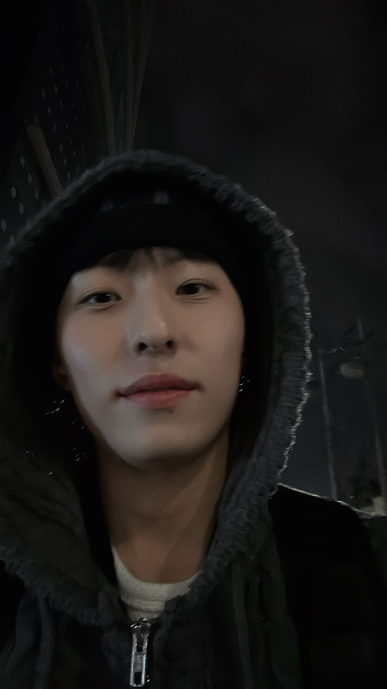

🏠 메인 페이지

이제혁의 포트폴리오에 오신 것을 환영합니다!
위 메뉴를 눌러 각 페이지로 이동해 보세요!
오른쪽 사진은 저의 프로필 사진입니다.
저는 중부대학교 정보보호학과 22학번 92212996 이제혁 입니다.
백석 요진 와이시티 거주 중이고
나이는 03년생 23살 입니다.
웹 해킹을 좋아하고 공부하고 있습니다.
현재 S.C.P 에서 활동하고 있습니다.
최근 어떤 분야에 관심이 있는지 찾지를 못해 고민 중입니다.
이번 학기 목표는 저의 관심 분야를 찾고 그 분야에 대해 깊이 있게 공부하는
것입니다.
앞으로 동아리 활동, 개인 공부를 열심히 해서 관심 분야를 찾고 싶습니다.